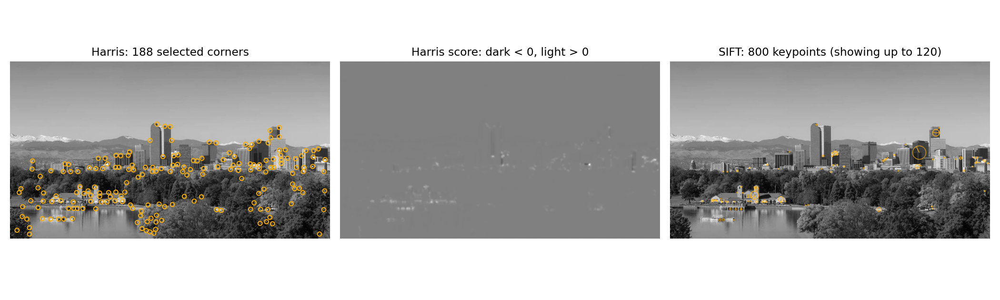

Homework 06: Feature Point Detection
Total: 5 points
Submission: Gradescope Programming Assignment
Work: Individual
Objective
Find distinctive points in an image. You will compute Harris corner scores and use OpenCV to extract SIFT keypoints and descriptors. Inspect detections on original, rotated, and scaled versions of the supplied image.
Use the course cv Conda environment. You may refer to the lecture examples and adapt them to the functions below. Do not use generative AI to solve this homework.
Starter files
Download these two files into the same folder:

The supplied grayscale image is a crop of the Denver skyline from Lecture 7. Keep it unchanged. Complete only these two functions:
harris_response(image, sigma_d, sigma_w, alpha)
extract_sift(image, nfeatures=800)The derivative filters, Harris corner selection, image loading, transformation example, and plotting are provided. Keep function names and arguments unchanged. Leave all provided code unchanged.
Tools and conventions
- Keep imports to
cv2,numpy,matplotlib, and the standard-library modules. - Use OpenCV for image filtering, SIFT extraction. NumPy array operations are allowed.
- For Part 1, implement the gradient products and Harris formula yourself. Do not replace this calculation with
cv2.cornerHarris,cv2.cornerEigenValsAndVecs,cv2.cornerMinEigenVal, or another complete corner-response function. - Use
cv2.SIFT_createanddetectAndComputein Part 2. - Do not modify input arrays. Do not normalize or clip the Harris response or the SIFT descriptors. Display scaling is handled by the driver.
- The grader supplies valid inputs. You do not need to implement input validation. Images have at least 16 rows and 16 columns; odd, even, and non-square images are possible.
- Image types differ by task: Part 1 receives
float32grayscale in[0, 1]; Part 2 receivesuint8grayscale in[0, 255]. The driver performs the conversion for you. - Importing
hw06.pymust not run the demonstration. Keep the suppliedif __name__ == "__main__":guard.
Part 1 — Compute the Harris response
Complete harris_response(image, sigma_d, sigma_w, alpha).
A corner has intensity changes in more than one direction within its neighborhood. The second-moment matrix summarizes this local gradient structure:
\[ M(x,y)=\begin{bmatrix}A&B\\B&C\end{bmatrix}. \]
Follow the lecture’s sequence:
- Smooth the input image using a Gaussian with standard deviation
sigma_d. - Get
hx, hyfromderivative_filters(). Apply them to the smoothed image to obtainIxandIy. - Form the elementwise products
Ix*Ix,Ix*Iy, andIy*Iy. - Smooth each product with a Gaussian of standard deviation
sigma_w. These areA,B, andC, respectively. - Compute and return the Harris score:
\[ R=AC-B^2-\alpha(A+C)^2. \]
Return a same-size float32 array. Keep negative scores: they contain useful information about edge-like neighborhoods. Do not apply corner thresholding inside this function.
Hints:
- Use
cv2.GaussianBlur(values, (0, 0), sigmaX=sigma, borderType=cv2.BORDER_REFLECT_101)for every Gaussian smoothing step.(0, 0)lets OpenCV choose the kernel size. - Use
cv2.filter2D(smoothed, -1, hx, borderType=cv2.BORDER_REFLECT_101), and similarly forhy. - Use the provided filters as written. Do not flip or rescale them.
sigma_dsmooths the image before differentiation.sigma_wcombines gradient products over a neighborhood. They serve different purposes.*means elementwise multiplication here; you do not need matrix multiplication or an eigenvalue calculation.- Graded parameters satisfy
sigma_d > 0,sigma_w > 0, and0 < alpha < 0.25.
The driver uses sigma_d=1.0, sigma_w=2.0, and alpha=0.04. Its provided corner-selection helper keeps sufficiently strong positive local maxima.
Try locally: A constant image should give approximately zero response. A straight intensity edge should have negative response nearby; a square should produce positive responses near its corners. Compare the actual response values, not only the display contrast.
Part 2 — Extract SIFT features
Complete extract_sift(image, nfeatures=800).
- Create a detector using
cv2.SIFT_create(nfeatures=nfeatures). Leave its other parameters at their defaults. - Call
detectAndCompute(image, None). - Return
(keypoints, descriptors)in OpenCV’s original order.
Return keypoints as a Python list of cv2.KeyPoint objects and descriptors as a float32 array of shape (N, 128), where N is the number of keypoints. Descriptor row i describes keypoint i. Do not sort one without the other, or normalize the descriptors yourself.
Hints:
- This function is short: OpenCV implements SIFT for you.
keypoint.ptcontains(x, y)in image coordinates, not(row, column). Keypoints also contain size and orientation information.nfeaturescontrols how many of the strongest features OpenCV aims to retain. Do not force the returned count to equal that value.- A blank image can contain no features. OpenCV may return
Nonefor its descriptors. In this case, return([], np.empty((0, 128), dtype=np.float32)). nfeaturesis always a positive integer. Use the supplied value rather than hard-coding 800.
Harris and SIFT are separate detection examples in this homework. SIFT uses its own detector; you do not need to convert Harris corners into SIFT keypoints. Each descriptor summarizes the appearance around its keypoint. We will use these descriptors for feature matching in the next homework.
Run and inspect the results
conda activate cv
python hw06.py --output-dir resultsOr specify the image:
python hw06.py skyline.png --output-dir resultsThe provided driver generates:
hw06_features.png: selected Harris corners, the signed Harris response, and SIFT keypoints.hw06_transformations.png: Harris and SIFT detections on the original image, a 20-degree rotated version, and a version scaled to 65% of its original dimensions.

Full-size detections · Rotation and scale comparison


The driver keeps the Harris parameters fixed across the three views. All SIFT keypoints are computed; the figures display only the strongest 120 to stay readable. Circles show keypoint size and spokes show orientation. The image panels fit each view into the available space, so use the scale labels rather than on-screen dimensions to interpret resizing.
As you inspect the figures, consider:
- Where does the Harris score become positive, negative, or approximately zero?
- Which scene structures produce selected corners?
- How do the SIFT circles and orientation spokes change when the image is rotated or resized?
- Why might the number and location of detections change after transformation?
Rotation introduces cropping and black borders; resizing introduces interpolation. These can affect detections. Harris and SIFT use different detectors and need not select identical locations. You do not need to find correspondences or quantify repeatability. No written report is required.
OpenCV versions may produce slightly different SIFT keypoints or counts. Exact figure pixels, fonts, and fixed reference keypoint counts are not grading targets.
What to submit
Submit exactly one file, hw06.py, to Gradescope. Do not submit images, figures, or a notebook.
Submission limit
You may make at most 5 valid Gradescope submissions. Test locally before submitting. Submissions 1–5 are graded normally; submission 6 and every later valid submission receive zero points for that submission. A Gradescope infrastructure failure marked as an autograder error does not count. Errors in your submitted code do count.
Grading
HW06 is worth 5 points and is fully autograded: 4 points for Harris response and 1 point for SIFT extraction. Across these parts, 1 point comes from public tests and 4 points from private tests.
Tests check the stated formulas, filtering conventions, shapes, data types, parameters, and preservation of inputs. Harris and SIFT are tested independently. Private groups include separately scored checks for partial credit. Small floating-point differences are allowed. SIFT is compared with OpenCV running in the same grading environment rather than a fixed count from the reference figures. The provided plotting code is not a separate scored task.
Public tests provide immediate detailed feedback. A public summary reports how many of the five private test groups passed completely. Individual private results, partial scores, and feedback appear after the Gradescope late due date. Passing public tests does not guarantee full credit.